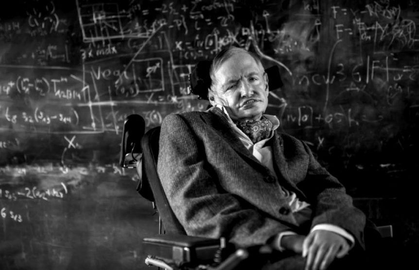

Stephen Hawking
1942-2018 AD
Hawking was born in Oxford into a family of doctors. Hawking began his university education at University College, Oxford in October 1959 at the age of 17, where he received a first-class BA (Hons.) degree in physics. He began his graduate work at Trinity Hall, Cambridge in October 1962, where he obtained his PhD degree in applied mathematics and theoretical physics, specialising in general relativity and cosmology in March 1966. see more...